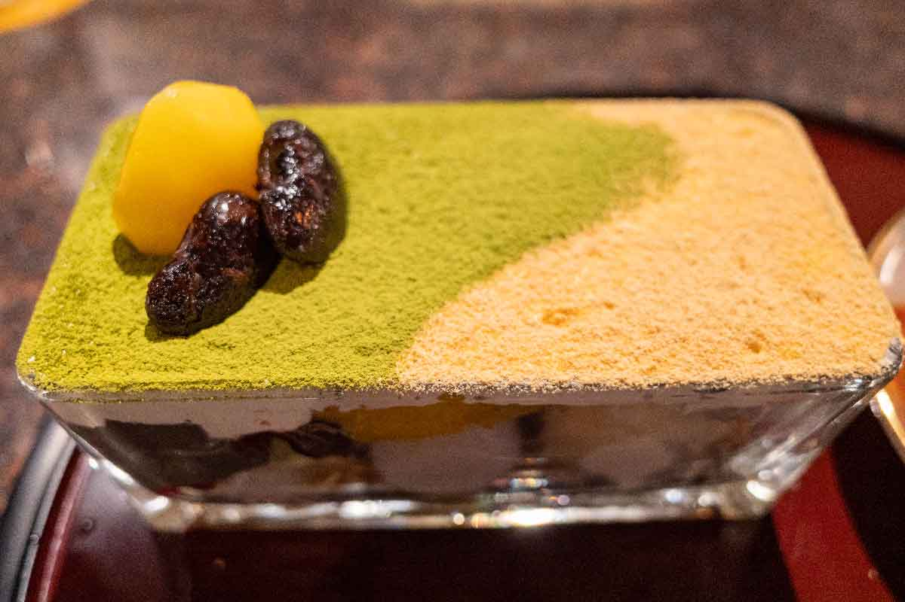
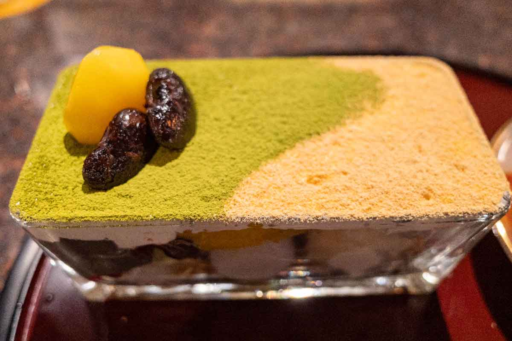

草津温泉
ふたりだけのほっこり旅
湯けむりに包まれて
2日間のゆるやかな時間
旅のスケジュール

いざ草津へ！ドライブ楽しもう
ホテルで荷物を預ける
宿でのんびり過ごそう
温泉に浸かったり、星空を眺めたり
素敵な時間をありがとう
観光スポット


💧 湯滝
自分に向かって落ちてくる湯滝に感動？！岩についている緑のモノは「イデユコゴメ」という藻。強酸性のところが好きな珍しい原始的藻類。「草津にきました」記念写真はやっぱ、ここかな。
📍 地図で見る
🎋 湯路広場
昭和レトロの木回廊と、湯畑の"畑"に対し棚田をイメージした湯路広場。湯畑周辺で見つけたお気に入りの食べ物や飲み物を片手に、温泉情緒を感じながら一休み♪ここではイベントが行われていることも(*^^*)
📍 地図で見る🎭 熱乃湯「湯もみと踊り」
草津節にあわせて湯もみのショーが見られるのはこちら。1回のショーで2回湯もみがあります！お客様体験コーナーも！
※時期により変動あり。公式サイトでご確認ください。
🎯 射的本舗まんだら堂
温泉娯楽の王道、射的。草津地ならではの雰囲気を大切にした本格的射的場です。誰が呼んだか「行列のできる射的場」。最大12名様が並んで、ご遊戯頂けます。協力プレイ、点数の合算など、なんでもアリのお店です。
📍 地図で見る🎰 ともえや
草津温泉 昭和 駄菓子とあそびの広場。草津で唯一のスマートボール（ビンゴ式）場です。子供から大人まで楽しめる娯楽施設です。ちょっとした休憩（無料）にぜひ立ち寄って下さい。
📍 地図で見る


🏮 裏草津 地蔵
2022年4月にリニューアルした地蔵エリア一体には足湯、手湯、顔湯、と温泉を体感できるポイントが勢ぞろい♪湯畑とはまた一味違った雰囲気を楽しんでみて下さい(*^^)v
📍 地図で見る
📚 漫画堂
草津温泉にゆかりのある有名漫画家の作品から話題のあの作品まで１万冊以上の漫画がずらり！草津に来た様々な漫画家の直筆イラスト＆サインも並んでいます♪みんなも知っているあの有名キャラクターが描かれているかも…？
📍 地図で見る🎨 百年石別邸
百年石制作体験とは、石灰石にペンキで好きな絵や文字を書く、体験です。その後は、職人により、温泉につけ磨き上げます。草津の温泉は酸性であるため、石自体が溶け、絵や文字の部分が浮かび上がる、草津温泉ならではの手法で作られるものです。世界に一つ、あなただけのオリジナルのお土産を、作ってみませんか？
📍 地図で見る🌄 高台広場
漫画堂や月の貌と同じ高台にあり、緑の植栽をした、段々畑のような高台広場。観光客が集中する湯畑周辺と違い「のんびり過ごす」をテーマに作られた空間は新たな名所として注目を集めています。夜間にはライトアップもされ、昼夜問わず楽しめる空間となっています。
📍 地図で見る🗺️ モデルコース
おすすめの観光ルートをご紹介
半日コース
午後から約2.5時間チェックイン後にさくっと回れる定番コース
1日満喫コース
朝から夕方まで草津を隅々まで楽しむ充実コース
夜の湯畑散歩
夕食後約1.5時間ライトアップされた幻想的な湯畑へ
☀️ 半日コース（午後から）
🌟 1日満喫コース
🌙 夜の湯畑散歩
💡 草津豆知識
知っておくと旅がもっと楽しくなる！
草津温泉は日本三名泉のひとつ。源頼朝や木曽義仲が発見したという伝説があり、江戸時代には「湯治場」として栄えました。八代将軍吉宗が草津の湯を江戸城まで運ばせたことでも有名です。
湯畑源泉：草津を代表する源泉。pH2.0前後の強酸性で殺菌力が高い。
万代鉱源泉：湯畑より温度が高く、さっぱりとした肌触り。
西の河原源泉：比較的まろやかな泉質。西の河原露天風呂で楽しめます。
湯畑に並ぶ木の樋（湯樋）は、源泉を冷ますと同時に「湯の花」を採取するためのもの。温泉の成分が沈殿してできる湯の花は、入浴剤としてお土産にも人気です。
草津には無料の共同浴場がいくつかあります。地元の方も利用するので、マナーを守りましょう。
・体を洗ってから入る
・タオルを湯船に入れない
・大声で騒がない
・長時間の独占を避ける
草津は温泉まんじゅう発祥の地とも言われています。湯畑の蒸気で蒸した「ゆもみちゃん焼」や、できたてホカホカの温泉まんじゅうが名物。西の河原通りにはたくさんのお店が並んでいます。
朝：人が少なく静かな湯畑を散策。朝市が開催されることも。
昼：西の河原通りで食べ歩き。お店が活気づく時間帯。
夜：ライトアップされた湯畑は必見！湯けむりが幻想的に輝きます。
草津の源泉は約50〜90℃と非常に高温。水で薄めると効能が落ちるため、大きな板で湯をかき混ぜて温度を下げる「湯もみ」が考案されました。草津節を歌いながらの湯もみは、今では観光名物となっています。
草津温泉などの酸性泉の温泉地ではよくある話で、配管や金属部品が劣化しやすいんです。さらに酸性の湯けむりが電子機器の配線の露出部分や基盤に付着し、ゆっくり化学反応を起こして錆や腐食を生むことも。草津温泉が他の温泉地に比べて「割高」なのもそのせいらしいです。
「酸性泉＝ピリピリして肌によくない」というイメージがあるかもしれませんが、実はそんなことはありません！草津の湯は肌がツルツルになって白くなる効果が期待できます。奇跡的にアトピーが良くなったという体験談も。強酸性の殺菌力が肌のトラブルに効くのかもしれませんね。
グルメ
湯川テラス
料理人が監修する料理を、テーブル席やテラス、さらに足湯に入りながら楽しめます。おふくろの味「おきりこみ」、上州牛のひつまぶしなど、群馬の食材をつかった料理やカフェメニューをご用意。
📍 地図で見る
うまいもの処（まる天）
食べ歩きにおすすめなのが、お店で揚げたてを提供してくれる「まる天」(各420円)。「たこ棒」「海老マヨ棒」「チーズ棒」の3種類があり、外はカリカリ、中はとろ～りとした食感が楽しめます。
📍 地図で見る

ごま福堂 草津店
鉄板の黒ごま・金ごまのお団子はおすすめNo.1の商品となっており、ここに来たら食べなければいけない団子となっています。ごまの風味をすごく感じることができて、こだわっている商品
📍 地図で見るナカヨシ堂
あれもこれも映える！これぞレトロ＆エモの宝庫。湯畑の眼の前にある、銭湯をコンセプトにした土産店。レトロかわいい店内には胸が高鳴る魅力的なグッズがズラリ。ソフトクリームソーダはテイクアウトにして湯畑前で撮るのもおすすめ。
📍 地図で見る


カフェ月の貌
にぎやかな湯畑から少し離れた地蔵エリアにできた、落ち着いた大人のためのカフェ。木の香りに包まれた開放的でおしゃれな空間で、湯上がりにホッと一息カフェタイム。香り豊かな空間で、くつろぎのひとときを。
📍 地図で見る 

奈良屋 喫茶去
店内は「木のぬくもりをいかしたモダンな空間」をイメージしている。抹茶と黒ごまプリンのパフェやサイフォンを使い1杯ずつ丁寧にいれた珈琲が名物。喫茶去とは「どうぞ、一服召し上がれ」という禅語のひとつなんだそうですよ。
📍 地図で見る

TEA ROOM Yuki Usagi
ゆきうさぎの自慢は煮出して作る濃いミルクティーとふんわりスコーン、そしてしっとりカステラ。ゆっくりたっぷりお楽しみいただけるよう、紅茶とミルクティーはポットでお出ししています。
📍 地図で見る

射的茶屋祭りや
射的はコルク銃で的を撃ち、景品を落とすシンプルなルールで、子どもから大人まで楽しめます。そこにある団子とフルーツ飴を売っている店舗。焼き印をジュ～っと体験できるのは面白い
📍 地図で見る

湯の香本舗
草津の清らかな天然水をそのまま閉じこめた、透明感のあるわらび餅です。舟皿の上にちょこんと可愛らしく乗った風船を爪楊枝で割ると、わらび餅が、ぷるぷる震えながらあらわれます。創業110余年の土産店「草津温泉 湯の香本舗」の新名物です。
📍 地図で見る


草津たまごファーム
草津たまごファームは、群馬県産のこだわり卵を使った『たまご菓子専門店』です。とにかくなめらかな口当たりでたまごの味がしっかり残っており、こだわった商品作りをしている
📍 地図で見る宿泊先
ラビスタ草津ヒルズ
〜 星空と温泉に癒される贅沢なひととき 〜


お食事

🌙 ご夕食
季節の食材を使った洋食コース料理。地元産の旬の素材をふんだんに使用。
🌅 ご朝食
和洋バイキング形式。地元の食材や新鮮野菜を使った料理が並びます。

🍜 夜鳴きそば
無料サービス！醤油ラーメンとトマトラーメンからお選びいただけます。
無料
☕ ラウンジサービス
コーヒー・紅茶などのドリンクはもちろん、アイスクリーム・ソーセージなど時間帯によって内容の異なるラウンジサービスが楽しめるくつろぎスペース。

無料シャトルバス
ホテル ⇔ 湯畑 間で運行中
マジックベンダー
館内のどこかに「魔女によって魔法がかけられた自販機」が...！
お金を入れなくてもボタンを押すだけで飲み物が出てくる不思議な自販機。
お水かお茶を1人1本無料でいただけます。探してみてね！